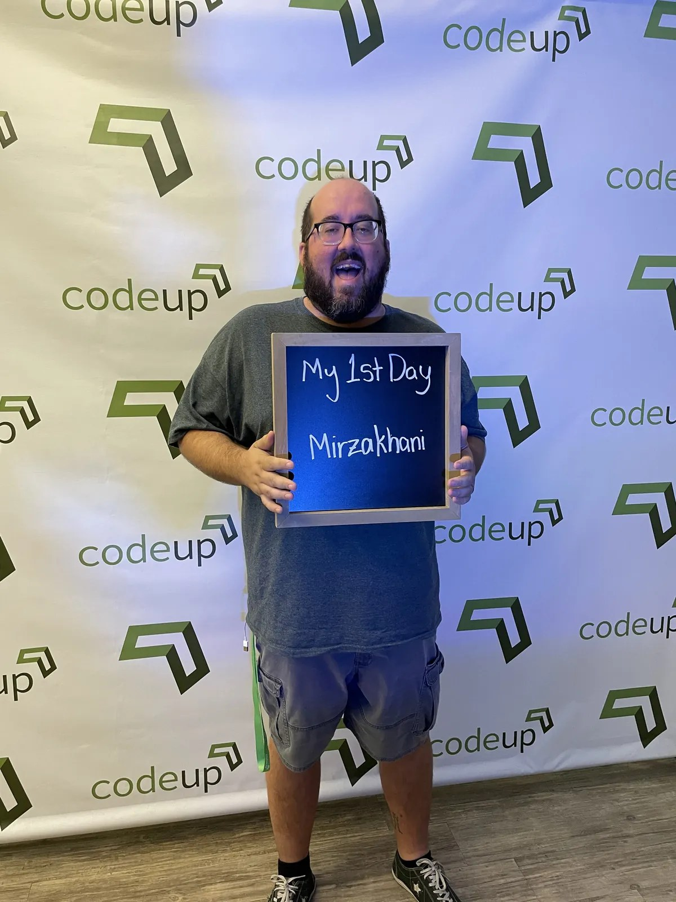
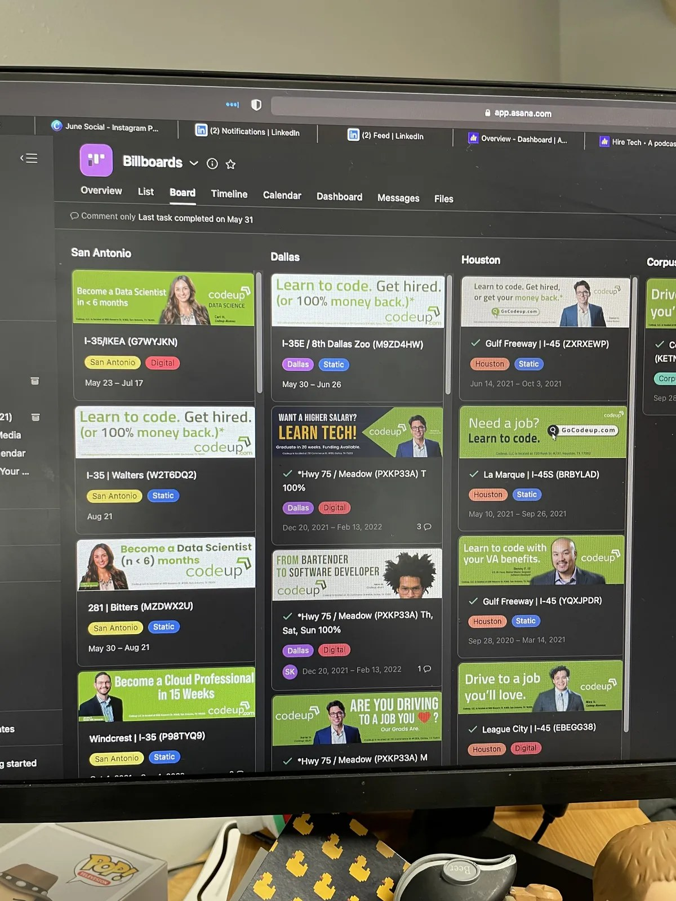
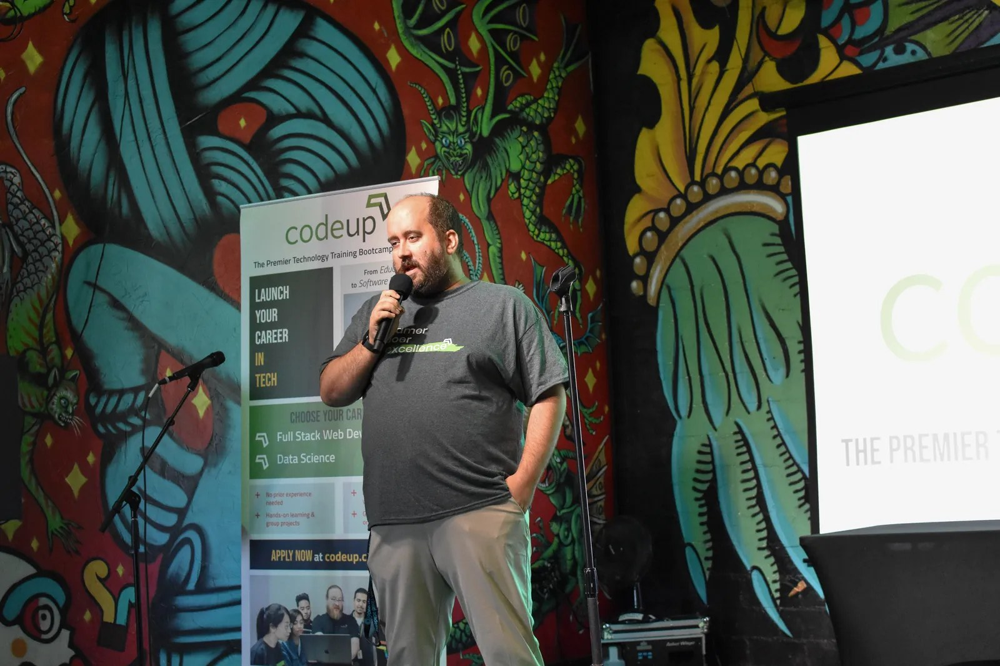
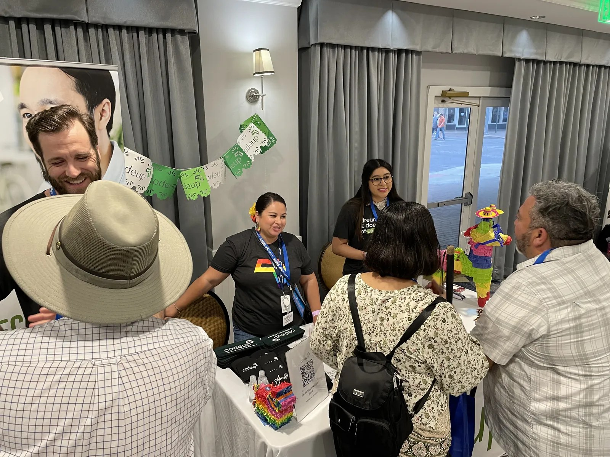
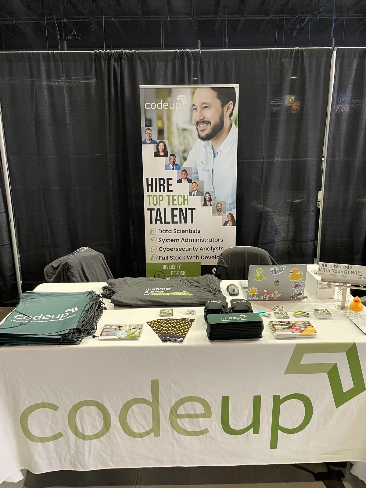
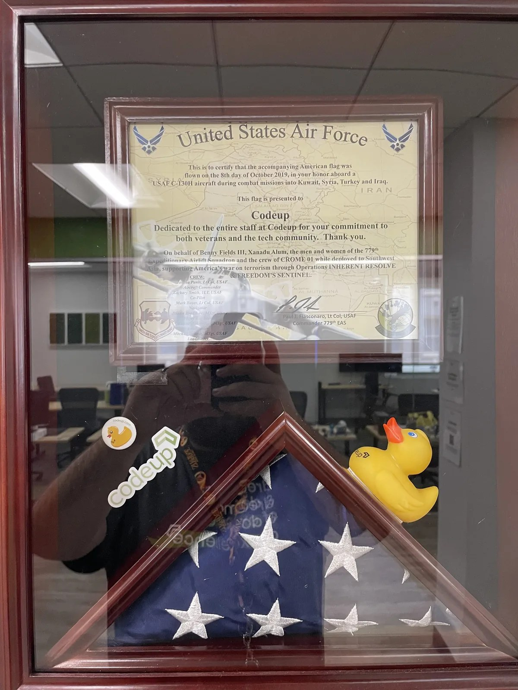
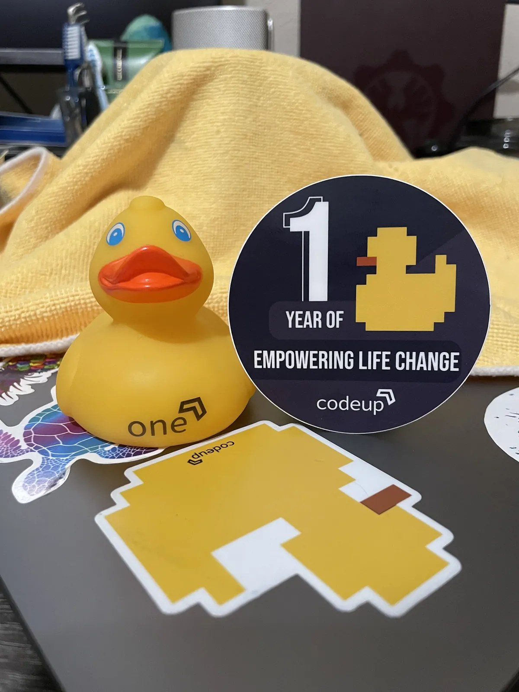
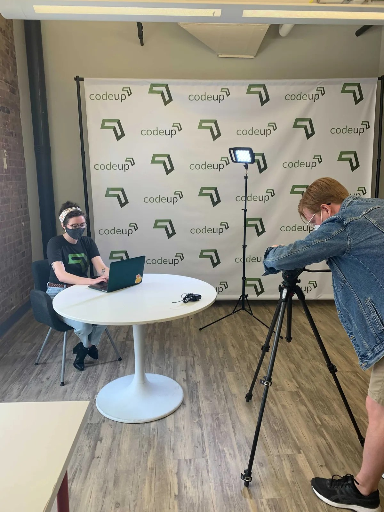

A more connected funnel
Blogs turned into social content. Social content drove readers back to the website. Website content pushed people toward learning more about the programs, registering for an info session, and moving closer to enrollment.
Codeup · October 2020 – October 2022
As a Digital Marketing Specialist, I helped connect content, community, website strategy, digital events, and campaign execution into a smoother journey from first impression to info session to enrollment.
Collaboration + ownership: I owned or supported social, blog, website, event, and community execution as part of a broader marketing and operations team. The outcomes below were shared wins, not solo achievements.
Codeup needed marketing that could do more than just generate awareness. It had to attract prospective students, support digital events, communicate outcomes clearly, strengthen employer relationships, and help people understand a technical product in a way that felt approachable.
Because the brand lived in tech education, good marketing required more than surface-level messaging. I had to understand the curriculum, the student journey, and enough of the coding world to translate it into content that felt clear, credible, and relevant.
The brand also had a real trust story to tell. Codeup became the first accredited coding bootcamp in Texas, which gave the team a stronger credibility point in a crowded category and made clearer, stronger messaging even more important.

25%
Increase in student applications through a more connected content and campaign system.
20%
Increase in employer partner leads through stronger hiring-partner marketing.
35%
Average audience growth across channels, including more than 50% growth on LinkedIn.
This role was bigger than publishing content. I helped connect the channels, events, campaigns, and community touchpoints that moved people from curiosity to action, while also supporting the employer side of the business and the broader student experience.
Blogs turned into social content. Social content drove readers back to the website. Website content pushed people toward learning more about the programs, registering for an info session, and moving closer to enrollment.
We supported a website refresh designed to feel more modern, improve UI and UX, and create a smoother user flow for prospective students trying to understand the programs and take the next step.
The work stretched across B2C and B2B audiences — prospective students, current students, hiring partners, financial partners, digital events, and outside marketing channels like billboards, radio, and movie theater ads.

Women’s History Month: women-centered content highlighting leadership, employees, and student success stories.
New Year, New Career: a seasonal campaign built around career-change momentum and fresh-start energy.
From this job to this job: transformation storytelling that made outcomes easier to picture, like barista to software developer.
Veteran-focused campaigns: events and messaging built around a distinct audience with its own path into tech.
Codeup ran digital events every month, and those events were a meaningful part of how the brand educated prospective students and built trust. My role was not just promoting them. I helped plan and market them, and in some cases stepped in operationally as a host or behind-the-scenes support.
That same event mindset showed up offline, too. We supported community-facing brand moments like Fiesta activations, hiring-partner events, and recruiting opportunities that made Codeup feel visible, active, and approachable in the real world.
The result was a better loop between campaign messaging, live experience, and follow-up content.

Part of the work extended into student community. I regularly supported students through Slack by helping with issues, celebrating wins, and highlighting new job placements.
That mattered because it reinforced Codeup as more than a place people applied to. It helped the brand feel more human, more supportive, and more invested in student progress.
Community was not separate from marketing. It gave us better stories, reinforced trust, and made the student journey feel real after someone first clicked on a post, email, or blog.

One of the more interesting parts of the role was balancing both B2C and B2B needs. Some efforts focused on prospective students through content, events, campaigns, and website journeys designed to drive info-session signups and applications. Other efforts supported hiring partners, financial partners, and outside marketing relationships.
That meant the work had to flex between student-centered storytelling, employer-facing value, and broader visibility across channels like billboards, radio, theater pre-roll, and event sponsorships.
It was a fun dynamic because it forced the brand to be useful to more than one audience without losing clarity.

Veteran-focused outreach and events were an important part of the work. They represented a distinct audience with different questions, benefits, and career-transition goals, and deserved marketing that spoke clearly to that reality.
That kind of work reminded me that good education marketing is not just about volume. It is about relevance, credibility, and making people feel like the brand actually understands what they need.
Codeup also launched its first podcast during my time there, helping expand the brand’s thought leadership and create another channel for storytelling beyond the usual social-and-web rhythm.


This role was not just strategy and writing. It also included real content production. I helped create and execute marketing videos, promotional assets, and event-related content, while supporting the production side when the work needed to get made.
That made the marketing stronger because the strategy was connected to the actual footage, visual needs, and live campaign moments instead of being developed in a vacuum.

A funnel feels stronger when every touchpoint answers the next question. Social created curiosity, long-form content built understanding, events created trust, and community made the promise feel real after the click.
Marketing a technical product requires enough subject knowledge to translate it accurately. The goal was never to make the work sound simple; it was to make the path forward feel clear.
Keep exploring
See how I applied the same audience-first thinking to a major destination brand and a project-based architecture firm.
Whether you need a content system that actually moves people, a stronger campaign engine, or a marketer who can connect the story to the funnel, let’s talk. I build strategy, systems, and creative that help brands show up with more clarity, consistency, and impact.